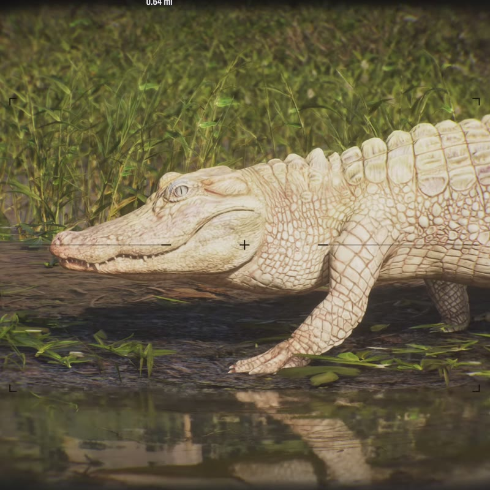
Animals Welcome to the wild side of Vice City! Here you can see all the animals, from alligators in the swamps to dolphins off the coast. Explore the animals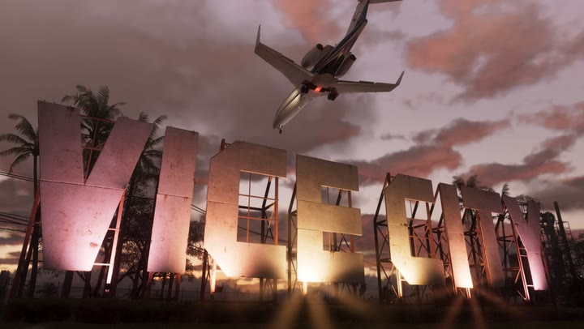
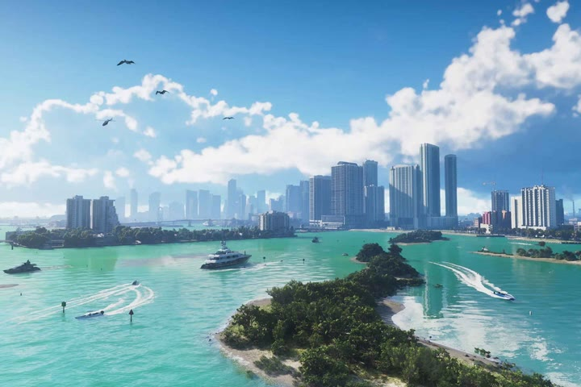
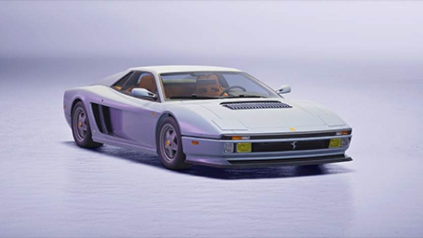
Cars Welcome to the streets of Vice City! Here you can find all the cars, from muscle cars and supercars to motorcycles. Explore the cars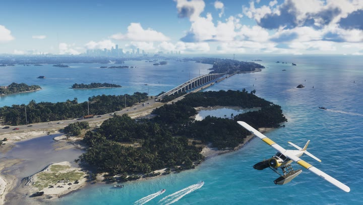
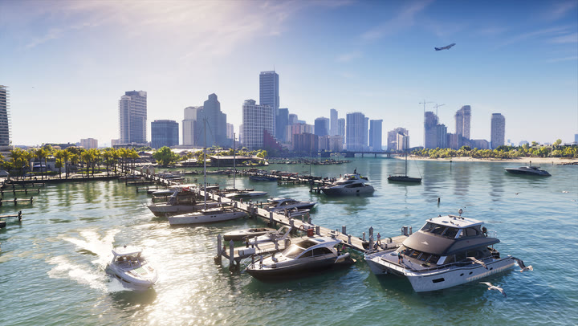
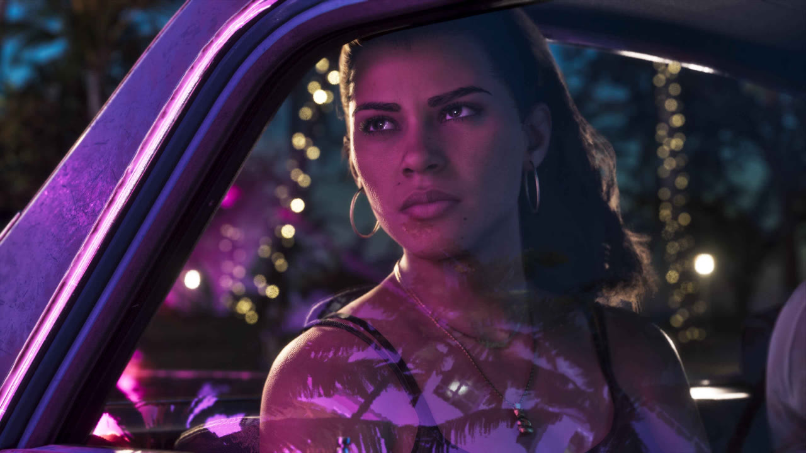
Characters Welcome to Vice City! Here you can meet Jason, Lucia and all the people they run into in Leonida. Meet the characters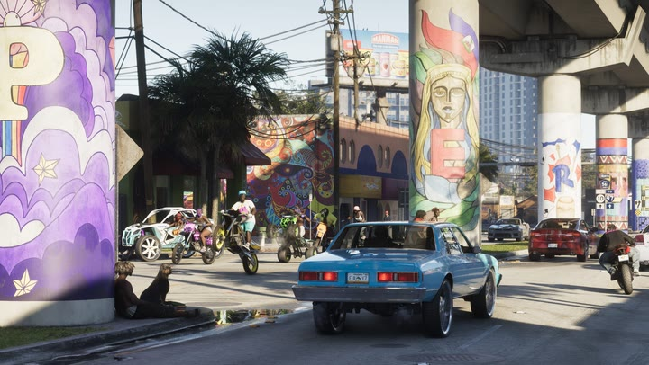
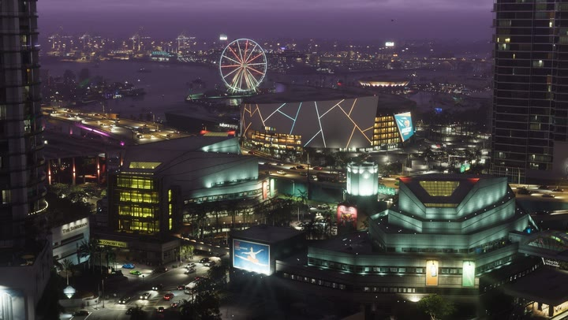
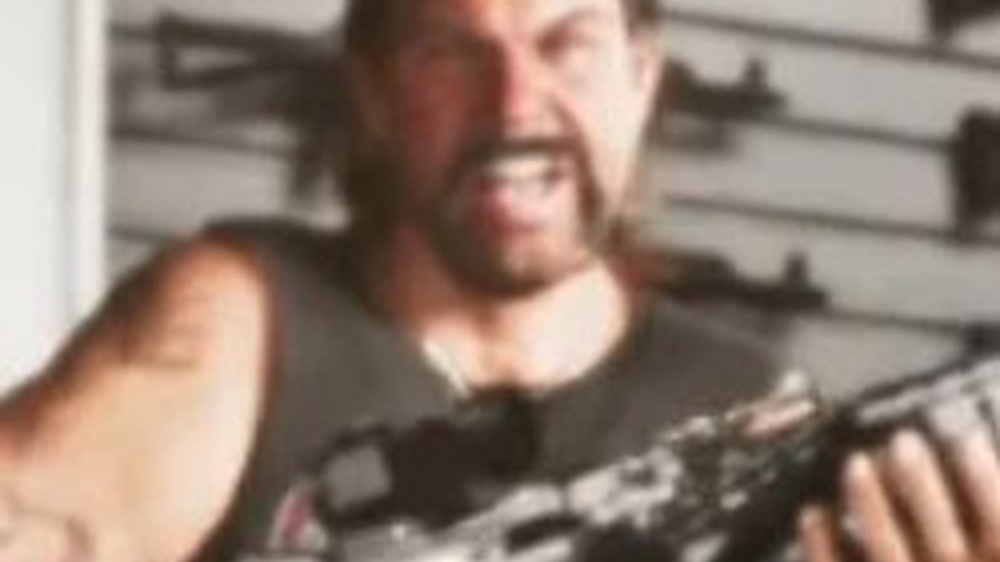
Shops Need a new look in Vice City? Here you can find all the barbers, clothing stores, gun stores and more. Find the shops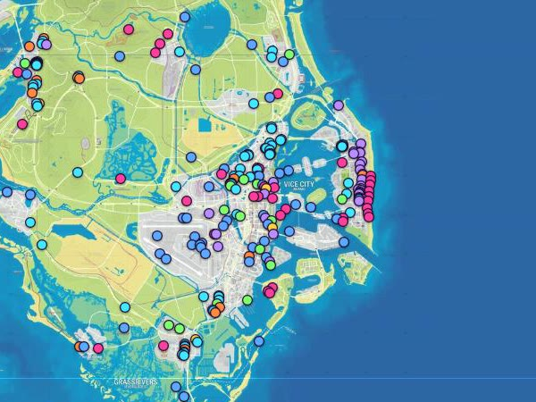
Map The whole state of Leonida on one map. Find activities, landmarks, food, hotels, airports and hundreds of other places. Open the map